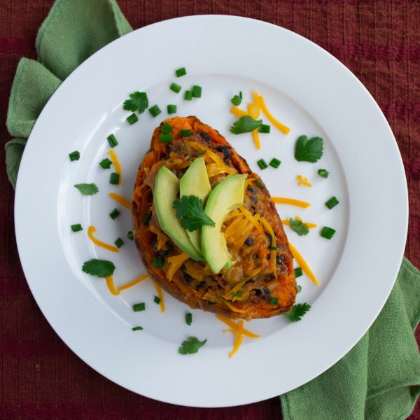

Stuffed Mexican Sweet Potatoes

Nutrition (per serving)
700.6 kcalCalories
24.7 gProtein
82 gCarbs
34.2 gFat
Full nutrition table
| Calories | 700.6 kcal |
| Total fat | 34.2 g |
| Saturated fat | 11.9 g |
| Trans fat | 0.6 g |
| Cholesterol | 44.4 mg |
| Sodium | 788.3 mg |
| Carbohydrates | 82 g |
| Fiber | 30 g |
| Sugars | 14.5 g |
| Protein | 24.7 g |
| Potassium | 2060 mg |
| Calcium | 446.9 mg |
| Iron | 6.7 mg |
| Vitamin A | 17680.3 IU |
| Vitamin C | 57.9 mg |
| Vitamin D | 11.1 IU |
Cookware
Ingredients
- 2avocados
- 2 (15 oz) cansblack beans
- ½ (8 oz) blockcheddar cheese
- 1 small bunchcilantro
- 2 (14.5 oz) cansdiced tomatoes
- 2 clovesgarlic
- 1 small bunchgreen onions (scallions)
- 1lime
- 1 lbsweet potato
- 2 mediumyellow onions
- butter, unsalted
- cayenne pepper
- chili powder
- cumin, ground
- extra virgin olive oil
- salt
Steps
- Preheat oven to 450°F and place the rack in the center position.
- Wash and dry the fresh produce.1 lb sweet potato
1 small bunch cilantro
1 small bunch green onions (scallions) - Cut sweet potatoes in half lengthwise. Rub the inside and outside of the potato with oil and season with salt. Place cut side down on a baking sheet pan and pierce skin all over with a fork. Bake for 25 minutes until sweet potatoes are fork tender.2 tsp extra virgin olive oil
2 tsp salt - Meanwhile, preheat a medium saucepan over medium heat. When heated, add butter to the pan.2 tbsp butter, unsalted
- Peel and small dice the onion. Peel and mince or press the garlic. Add to onions and garlic to the pan; cook, stirring frequently, until translucent, about 5 minutes.2 medium yellow onions
2 cloves garlic - Drain and rinse beans in a colander. Add to pan with the onion and garlic.2 (15 oz) cans black beans
- Drain diced tomatoes using the colander and discard juice. Add tomatoes to pan.2 (14.5 oz) cans diced tomatoes
- Season the bean mixture with chili powder, cumin, salt, and cayenne pepper. Stir until fragrant, 15 to 30 seconds.1 tsp salt
½ tsp cumin
½ tsp chili powder
¼ tsp cayenne pepper - Turn heat up to medium-high and cook, stirring occasionally, until the beans are warmed through and tender, 5 minutes. Mash some of the beans with a potato masher.
- Remove the sweet potatoes from the oven when fork-tender. Let cool for 5 minutes.
- Scrape out the flesh of the sweet potatoes, leaving the skins intact and a thin layer of potato inside, set skins aside.
- Add the sweet potato flesh to a bowl with the bean mixture, stir to combine.
- Grate cheddar cheese.½ (8 oz) block cheddar cheese
- Halve and pit the avocados; slice avocados crosswise while still in the skin and scoop out with a spoon.2 avocados
- Shave the cilantro leaves off the stems; discard the stems and mince the leaves.
- Trim and discard root ends of green onions, and chop.
- To serve, return the bean mixture to the sweet potato skins. Top with cheese, avocado, cilantro and green onion. Squeeze lime over top. Enjoy!1 lime